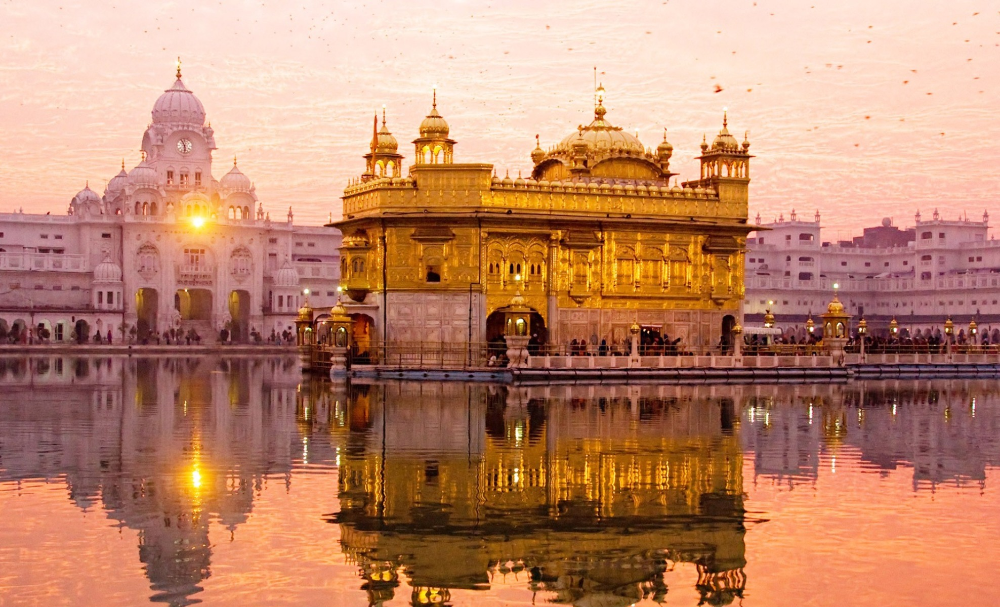
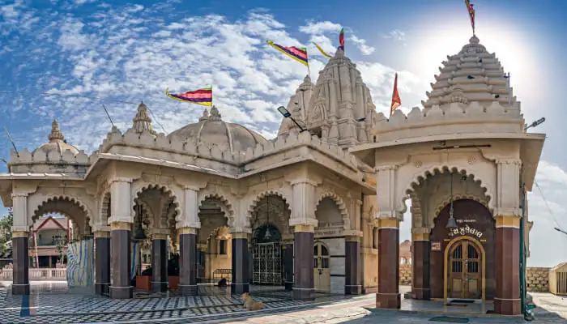
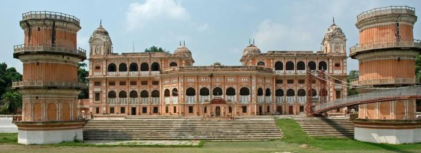

PUNJAB
Tourism in Indian Punjab centres around the historic palaces,
battle sites, and the great Sikh architecture of the state and the surrounding region .
FAMOUS TOP 3 TOURIST PLACES TO VISIT IN PUNJAB
- GOLDEN TEMPLE

- JALANDAR

- PATIALA

FAMOUS FOOD IN PUNJAB
- Butter Chicken - The king of all Punjabi dishes!
- Rajma Chawal - Staple Punjabi Food on tables across India!
- Sarson ka Saag - The most stereotyped dish of Punjab!